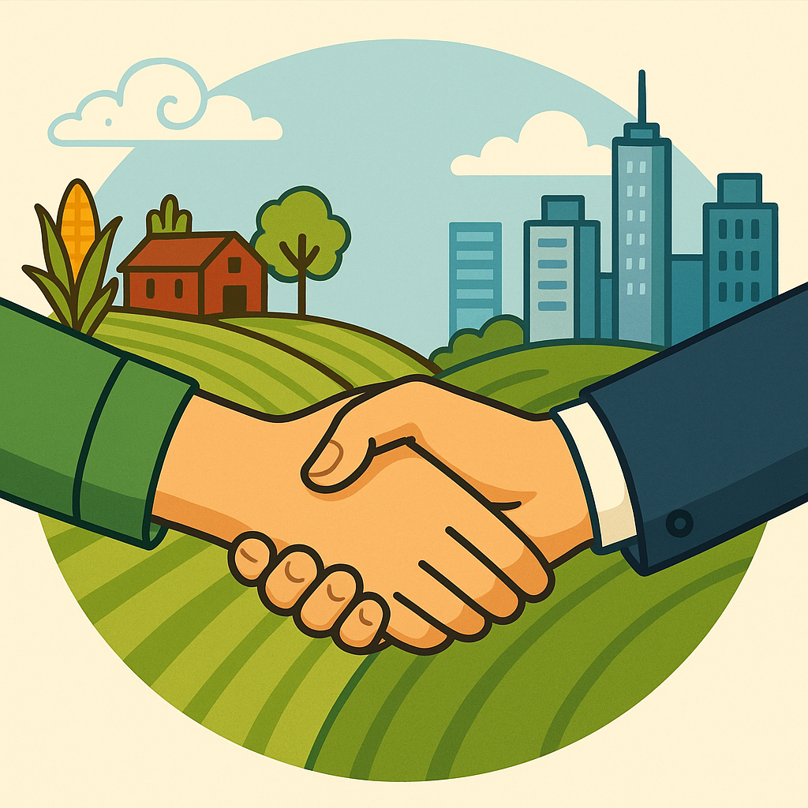
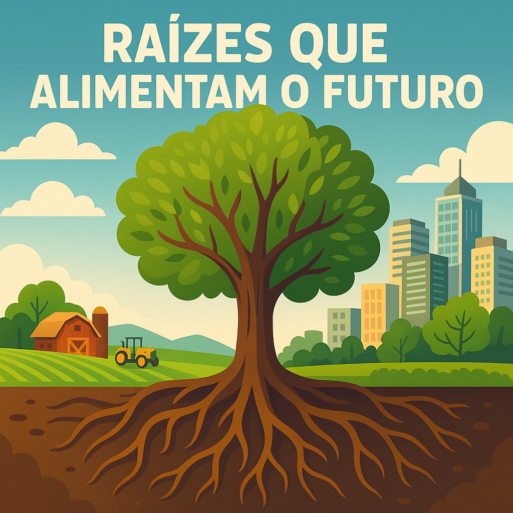
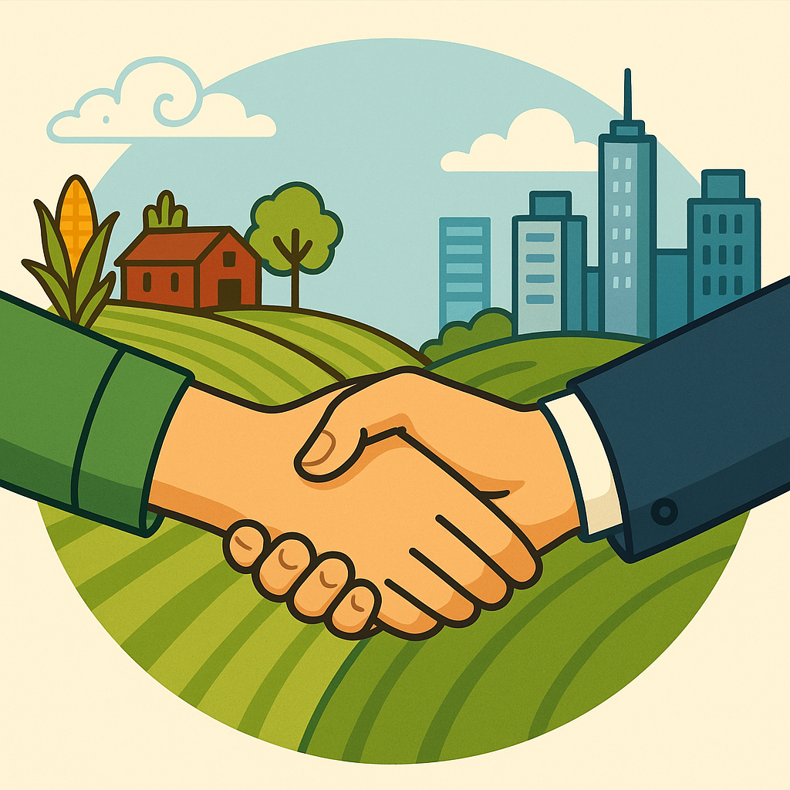
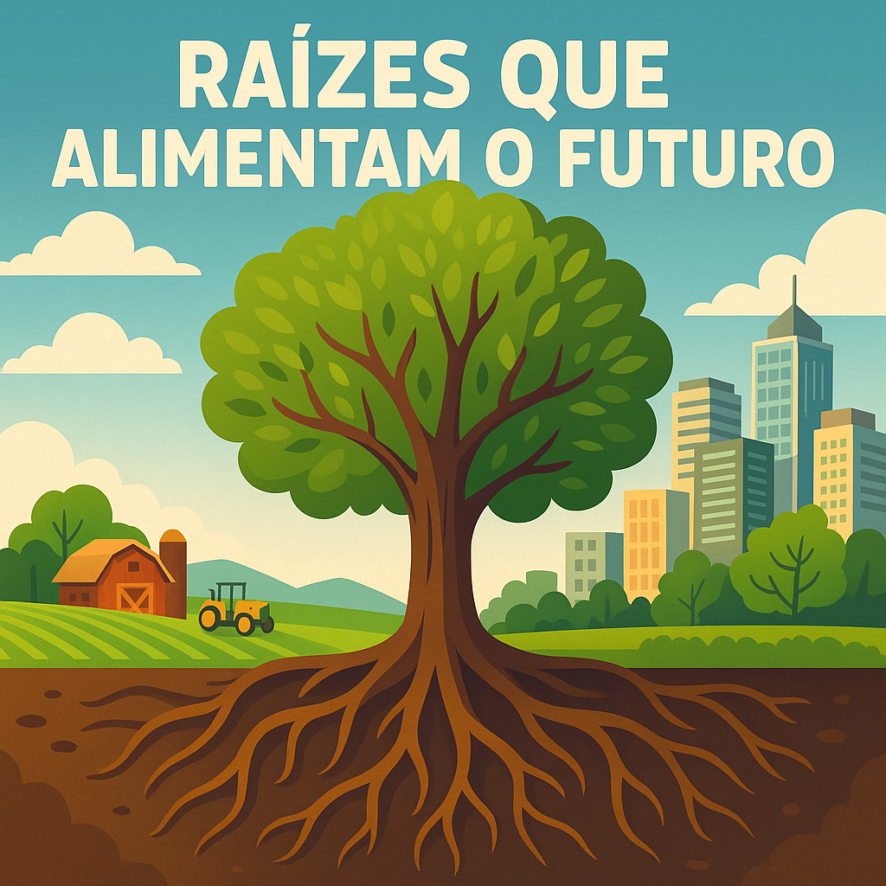

A união entre o Campo e a Cidade deve ser muito festejada!
🎉 Festejando a Conexão Campo e Cidade
Festejar a conexão entre o campo e a cidade é essencial para reconhecer e valorizar a colaboração que fortalece a economia, a cultura e a vida de todos. O campo abastece a cidade com alimentos, saberes e tradições, enquanto a cidade oferece tecnologia, mercado e serviços que impulsionam a vida rural.
🌾🎭 Festas que valorizam essa união:
- Festa do Colono: celebra o trabalho rural e sua importância na produção de alimentos.
- Feiras Agropecuárias: promovem o encontro entre produtores rurais e consumidores urbanos.
- Festa da Colheita: enaltece o ciclo produtivo do campo e a gratidão pela abundância.
- Festa Junina: mistura elementos urbanos e rurais em celebração popular.
- Festivais da Agricultura Familiar: destacam os saberes, sabores e produtos do campo nas cidades.
Ao festejar essa conexão, promovemos respeito, gratidão e diálogo entre dois mundos que são parte de um só país. Que tal realizar uma feira na escola ou um desfile temático com produtores locais e moradores urbanos? É uma ótima forma de aprender e celebrar juntos!
Imagens que Inspiram
 


